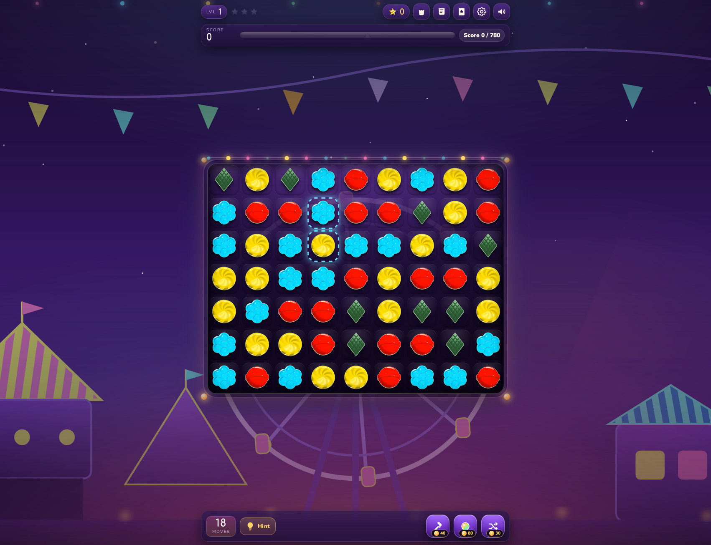

Три в ряд: Candy Carnival
Match-3 на ночном карнавале: меняй конфеты местами, собирай каскады и проходи уровни. Бесплатно, без установки, с подсказками и бонусами.
Играть прямо сейчас

Об игре
Классические «три в ряд» с карнавальным настроением: меняй конфеты местами, собирай линии и каскады, выполняй цель уровня за ограниченное число ходов. Подсказка подскажет ход, бонусы (молотия, шарики, перемешивание) помогают на сложных полях, а сундуки дают награды за прогресс.
Что внутри
- Уровни с целями и ограничением ходов
- Подсказка и бонусы: молотия, шарики, перемешивание
- Каскадные комбо и специальные конфеты
- Сундуки и награды за уровни
Где играть
- На этом сайте: Candy Carnival в браузере
- ВКонтакте / VK Игры — запуск из интерфейса VK
- Яндекс Игры — без установки, с прогрессом аккаунта
- RuStore и Google Play — мобильные версии (Android)
Частые вопросы
Нужно ли скачивать? Нет: игра открывается в браузере на телефоне и компьютере.
Нужен ли аккаунт? Нет. Прогресс сохраняется на устройстве, а на площадках (VK, Яндекс) — в аккаунте.
Игра платная? Бесплатная. Внутри есть реклама и покупки — они ускоряют прогресс, но не обязательны.
Другие игры студии
Арбуз 2048: Соедини Фрукты · Космический шутер: Cosmic Defender · Флаппи Космос: аркада в одну кнопку · Блок Блиц: Тетрис-головоломка · Звёздная станция: космическая Idle-игра · Найди Пары: Картинки на Память
Частые вопросы
Нужно ли скачивать игру?
Нет — Match-3 на ночном карнавале: меняй конфеты местами, собирай каскады и проходи уровни. Бесплатно, без установки, с подсказками и бонусами.
Нужна ли регистрация?
Нет. Игра стартует сразу, аккаунт не требуется.
Есть ли реклама и покупки?
Да: между уровнями показывается реклама, вознаграждаемое видео даёт бустер. Покупок в игре нет.
Работает ли игра без интернета?
Да, все 200 уровней доступны без интернета.